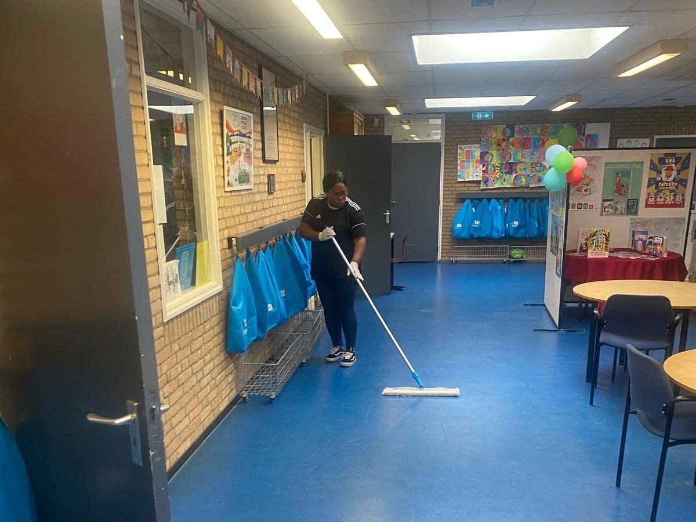

Kantoren & kantoorpanden
Representatieve, gezonde werkplekken met kantoorschoonmaak op uw ritme.
Yiska Cleaning VOF is de schoonmaakpartner voor bedrijven die professionaliteit, continuïteit en kwaliteit verwachten. Wij ontzorgen u met vaste schoonmaakcontracten, een vast team en een vast aanspreekpunt.
Wij zijn gespecialiseerd in zakelijke schoonmaak en kennen de eisen van uiteenlopende organisaties. Of u nu één locatie of meerdere panden beheert, wij schalen mee.
Representatieve, gezonde werkplekken met kantoorschoonmaak op uw ritme.
Bedrijfshallen, showrooms en commerciële ruimtes, afgestemd op uw branche.
Schoonmaak voor publieke gebouwen en ruimtes met oog voor hygiëne en uitstraling.
Schoonmaak van algemene ruimtes, portieken en complexen, netjes en consequent.
Schone shops, sanitair en buitenterreinen die 24/7 representatief blijven.
Schoonmaak en onderhoud van panden die u verhuurt of beheert.

Een vaste werkwijze die zekerheid geeft, van eerste gesprek tot doorlopende samenwerking.
We brengen uw locatie, wensen en eisen in kaart tijdens een bezoek op locatie.
U ontvangt een helder werkprogramma en een transparante offerte op maat.
Een vast team voert het werk consequent uit volgens het afgesproken plan.
Periodieke controles en evaluaties houden de kwaliteit op niveau.
Vertel ons over uw locatie en wensen. Wij plannen een gratis inventarisatie en stellen een passend schoonmaakcontract voor, zonder verplichtingen.